- О приложении
- Как происходит перевод нот?
- Как пользоваться программой?
- Какими возможностями и ограничениями обладает программа?
- Пример перевода
- Немного об истории разработки
- Библиотеки использованные в разработке
- Обратная связь
О приложении
Данное приложение переводит бла-бла-бла. Подробная информация об этом представлена в окне о программе (Справка->О программе).
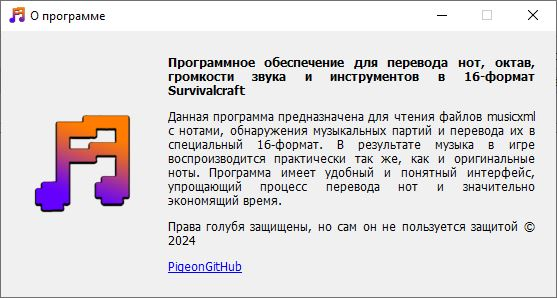
Но если ещё раз коротко, то программа берёт ноты из файла формата MusicXML и переводит в шестнадцатеричный формат для нот, инструмента, громкости и октавы в Survivalcraft. Эти данные необходимо записать в карту памяти для проигрывания музыки.
Как происходит перевод нот?
Попробую быстро, без использования технической или какой-либо другой справки, описать процесс ручного перевода нот, чтобы понимать, как оно само так работает, чтобы как надо, чтобы было (текст уровня Кличко).
У нас есть произведение и есть какое-то количество нот с разными длительностями. Представим, что у нас в произведении есть 1/16, 1/8, 1/4, 1/2 и целая ноты.
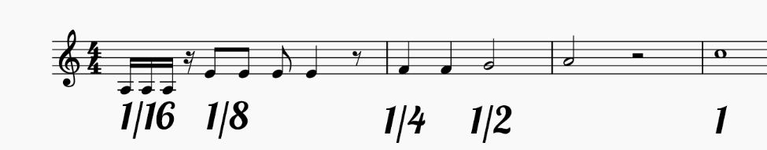
Такой небольшой простейший набор длительностей. Все длительности должны кодироваться символьной записью. Берётся самая быстрая длительность, которая кодируется как X. Далее вместо X нужно будет подставить саму ноту, но пока это опустим. X будет 1/16, поскольку это самая быстрая нота. 1/8 будет играться медленнее в 2 раза, поэтому мы ставим опять X и добавляем паузу в виде одного символа F. Если поставить XX, то это будут просто две 1/16. Затем 1/4 будет XFFF, 1/2 будет XFFFFFFF, а целая — XFFFFFFFFFFFFFFF.
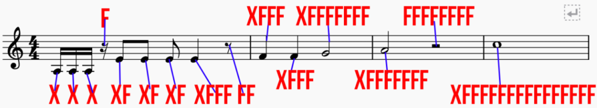
Теперь, когда у всех длительностей определена запись, подставим название нот вместо X и получим переведенную запись. Ноты переводятся согласно таблице ниже.
| Значение | Нота | Альтернативная нота |
| 0 | До | Си # |
| 1 | До # | Ре ь |
| 2 | Ре | — |
| 3 | Ре # | Ми ь |
| 4 | Ми | Фа ь |
| 5 | Фа | Ми # |
| 6 | Фа # | Соль ь |
| 7 | Соль | — |
| 8 | Соль # | Ля ь |
| 9 | Ля | — |
| A(10) | Ля # | Си ь |
| B(11) | Си | До ь |
| C(12) | До | Си # |
| D(13) | До # | Ре ь |
| E(14) | Ре | — |
| F(15) | Пауза | — |
Осталось только строкой ниже написать октавы под символами нот и перевод готов.
Кодировка без нот: X X X F XF XF XF XFFF FF XFFF XFFF XFFFFFFF XFFFFFFF FFFFFFFF XFFFFFFFFFFFFFFF Кодировка с нотами: 9 9 9 F 4F 4F 4F 4FFF FF 5FFF 5FFF 7FFFFFFF 9FFFFFFF FFFFFFFF 0FFFFFFFFFFFFFFF Октавы для пианино: 1 1 1 F 2F 2F 2F 2FFF FF 2FFF 2FFF 2FFFFFFF 2FFFFFFF FFFFFFFF 3FFFFFFFFFFFFFFF
Какие конкретно значения октав необходимо подставить, объяснять не буду, поскольку каждый инструмент имеет свой диапазон.
В игре с музыкой происходит интересное явление. Каждая нота играется определённое время. И для создания видимости, что у нот в игре есть длительности, нужно выдерживать паузу. Чем дольше длительность, тем дольше пауза после ноты. Конечно, можно взять настолько длинную ноту, что она даже перестанет играть в игре, где всё равно нужно будет выдерживать паузу. В общем, более подробно, а вернее очень подробно это будет расписано в руководстве Survivalcraft по электричеству, которое, может быть, выйдет до конца 2030 года.
Структура MusicXML файла устроена так, что там уже есть численное значение всех длительностей. В отличие от midi это очень удобно. Это позволило получить всю информацию о длительностях из тегов и атрибутов.
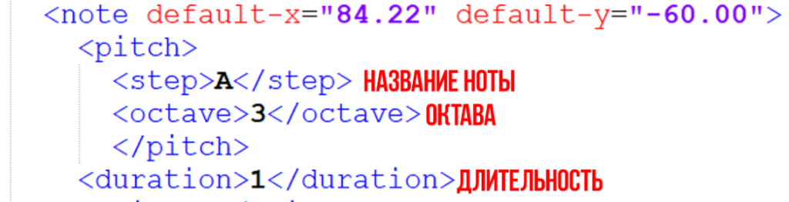
Как пользоваться программой?
Всё очень просто, или не совсем. Начнем с того, где взять ноты. Есть 2 пути:
- Написать их самому. Вот так бы я отвечал каждому школьнику, которому это ещё рано знать, потому что это сложно. Я сам пытался, но до конца не получилось.
- Скачать с сайта musescore.com или иного источника в интернете. Конкретно в musescore очень много музыкальных партитур. Но чтобы их скачать, необходимо отдельно посидеть, так как просто так скачать не получится. Необходимо кое-что установить, но я об этом расписывать не буду. Поищи информацию в интернете, там всё есть.
Скорей всего, ты скачаешь файл формата midi. Это такой двоичный файл, который хрен поймёшь и, соответственно, моя программа тоже не умеет его читать. Ниже показано двоичное представление файла Bad_Piggies.mid
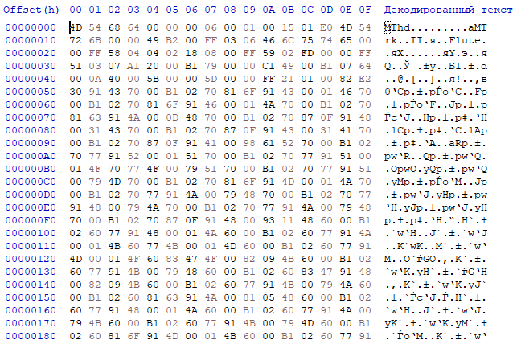
Этот файл нужно переформатировать в формат MusicXML. Можно воспользоваться онлайн конверторами, но я бы посоветовал скачать и установить обычное приложение musescore 3 или более старшей версии.
Ты открываешь файл через Файл-> Открыть
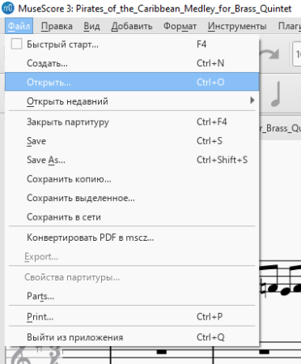
Далее выбираешь файл. Кстати, я коллекционирую midi файлы.
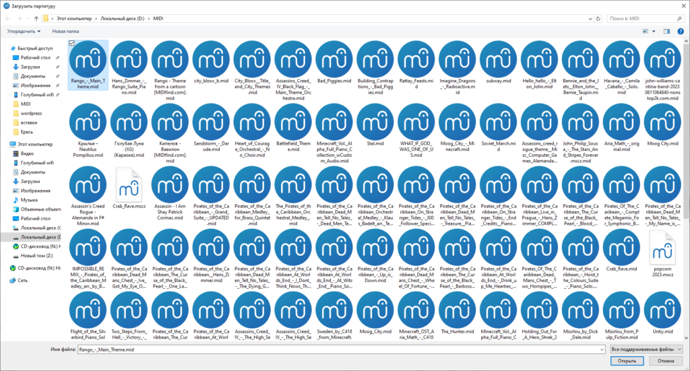
Он откроется. Далее нажимаешь экспорт.
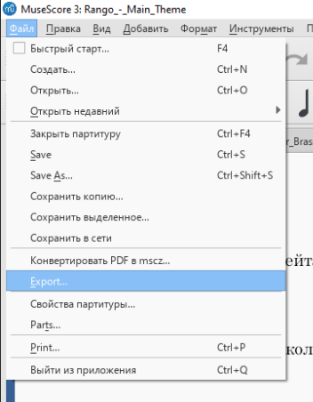
Выбираешь в списке экспортировать в MusicXML и жмёшь кнопку Экспортировать.
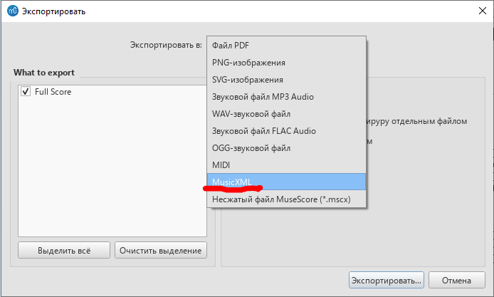
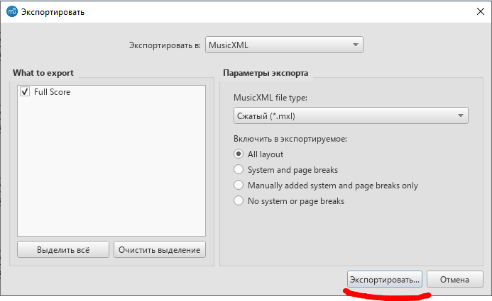
Теперь тебе нужно открыть в моей программе сохранённый файл через меню Файл-> Открыть файл.
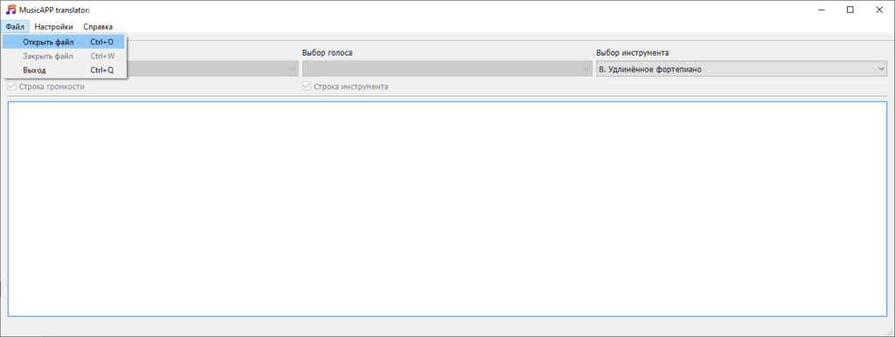
После этого происходит мгновенный перевод.
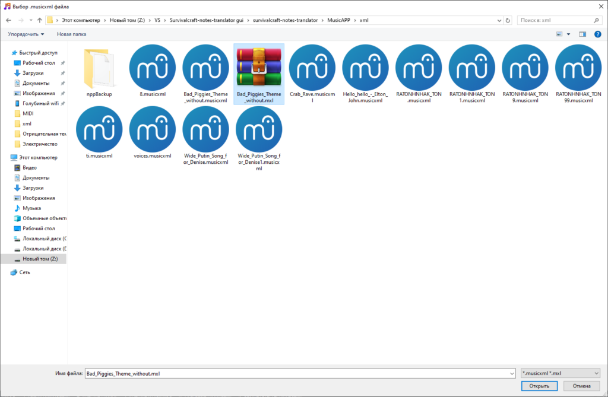
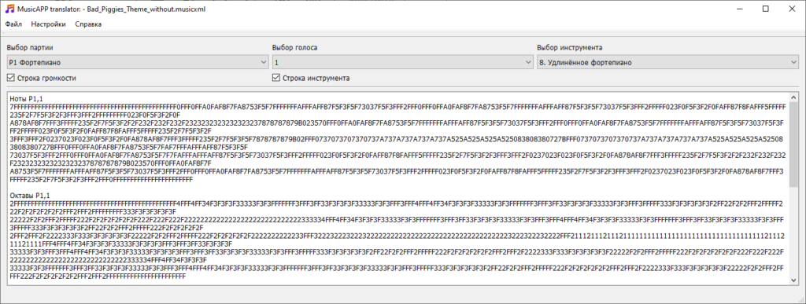
Программа может кушать MXL файл (это просто сжатый архив) и MusicXML (несжатый архив). Разница лишь в том, что последний можно сразу открыть в блокноте и просмотреть, а первый нужно разархивировать. Mususcore по умолчанию сохраняет в формат mxl.
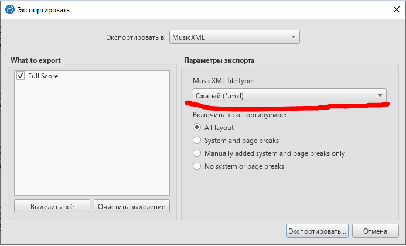
Тут описано немного подробнее.
Программа сканирует все партии и голоса в ней (если что партия – это нотный стан с каким-либо инструментом, а голос это независимая группа нот в этом стане).
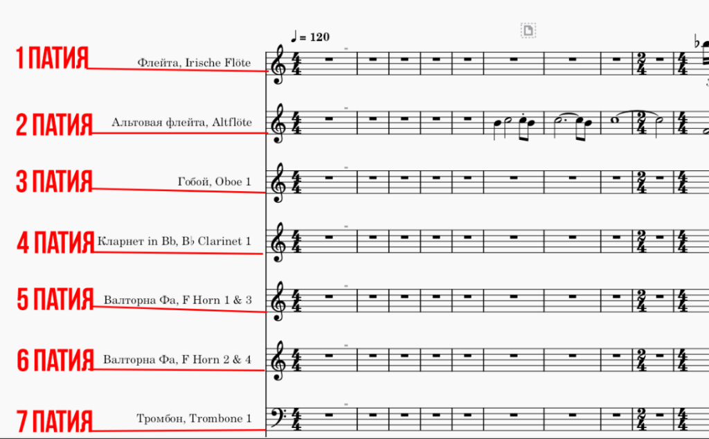
Голоса в редакторе musescore подсвечивается разными цветами в случае их выделения. Вообще установи это ПО, если планируешь постоянно переводить ноты.
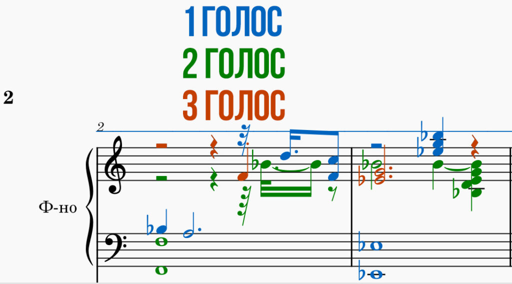
Ну так вот, программа сканирует каждую партию в произведении и голоса в ней. Из-за этой особенности, большие произведения приводят к зависанию программы. Над решением этой проблемы я ещё не думал. К примеру, пытаясь открыть файл RATONHNHAK_TON.musicxml, программа читает около 50 тыщ строк!
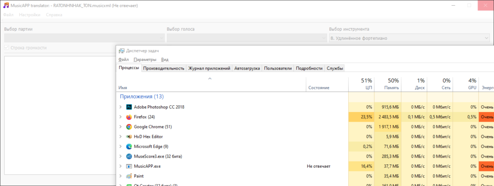
Вот его содержимое. Он действительно огромный.
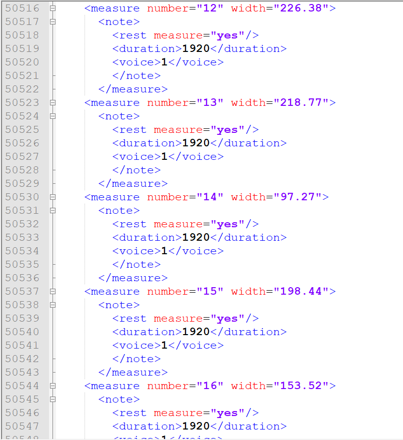
Хотя спустя какое-то время всё же перевести удалось, но выходные данные получились большими.
Как выглядит партитура в Musescore
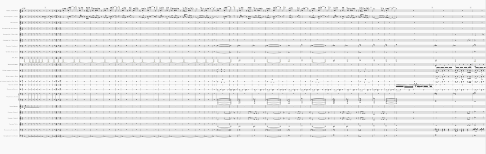
Когда сканирование завершится, то автоматически переведется 1 партия и первый голос. Рекомендую последовательно выбирать каждую партию и переводить в ней все голоса перед тем, как выбрать следующую партию.
К примеру, выбираем первую партию.
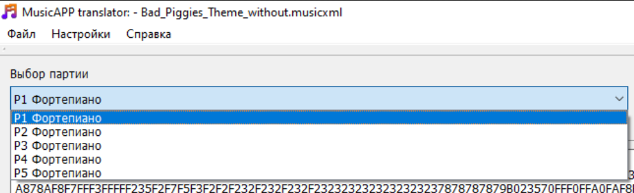
Далее проходимся по каждому голосу, но в этой партии он один.
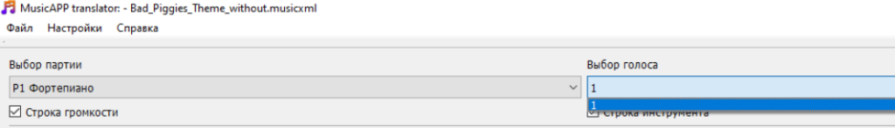
Далее переводим вторую партию и все её голоса.
Выходные значения выводятся в специальную область. Сначала указывается название данных, затем название партии, например, P1, и номер голоса, например, 1. Далее следуют данные в виде последовательности значений, представляющих ноты для P1,1. Далее отображаются октавы, инструмент и громкость.
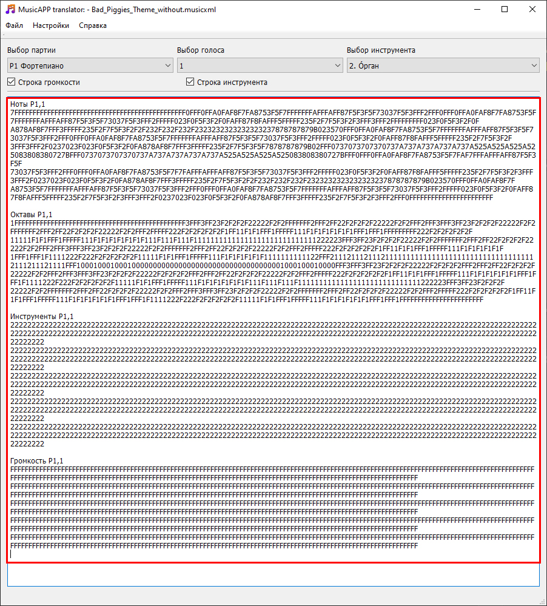
Все строки делятся по 256 символов. Последняя строка автоматически дополняется символами F, если количество символов меньше 256.
Затем можно отдельно включить вывод громкости звука с помощью отметки галочки в области check box. По умолчанию печатается такое же количество строк с символов F, поскольку чтение громкости пока не реализовано и там есть некоторые трудности.
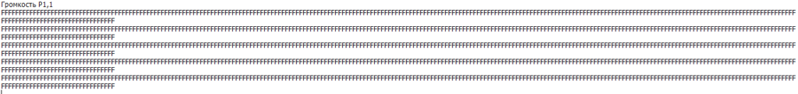
Активировав область check box строки инструментов произойдёт все тоже самое, что с предыдущими строками, однако тут отобразятся символы инструмента.
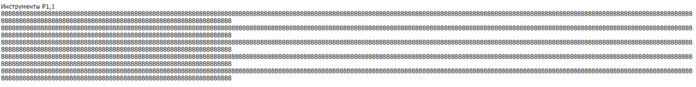
Меняя инструмент в списке выбор инструментов, будет меняться число в строке инструментов и возможно октава, так как каждый инструмент имеет свой диапазон октав, спасибо за это Каалусу!
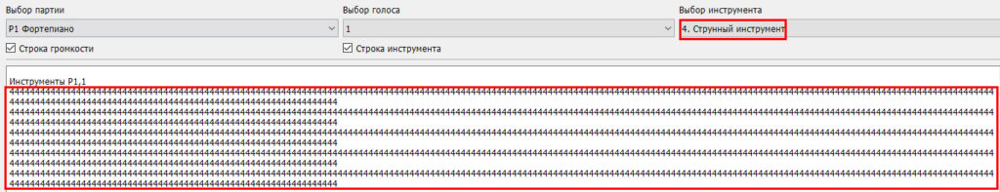
Если что, то вот диапазон октав для каждого инструмента. Информация была проверена экспериментальным путем.
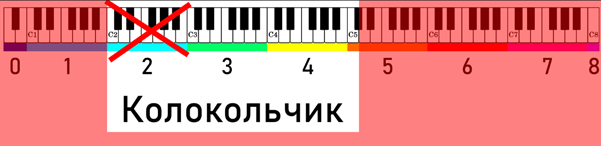
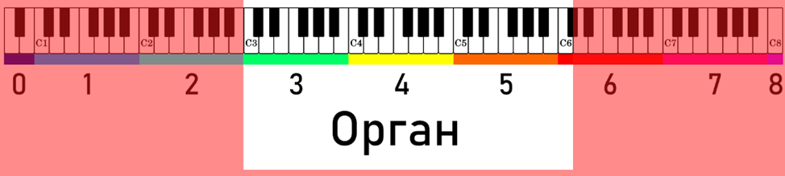
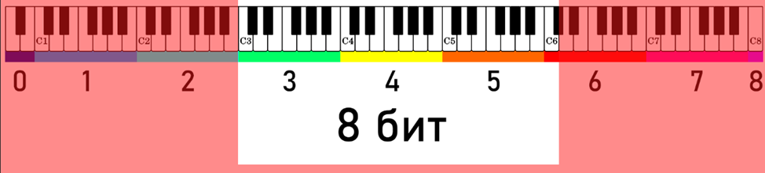
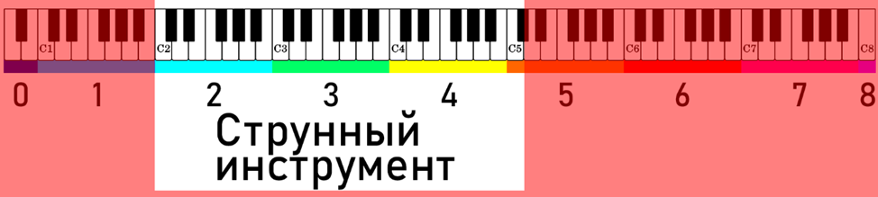
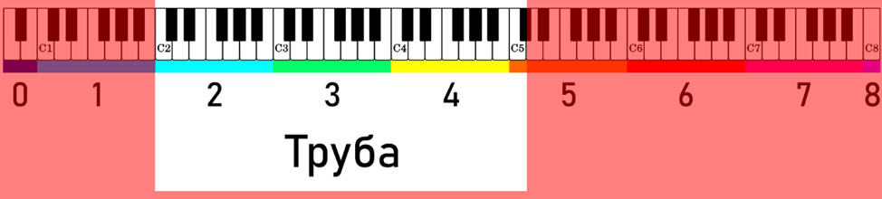
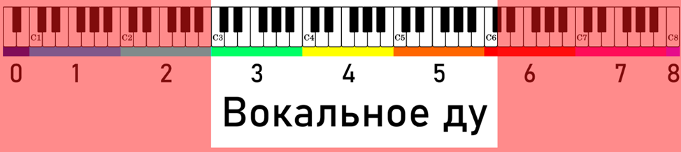
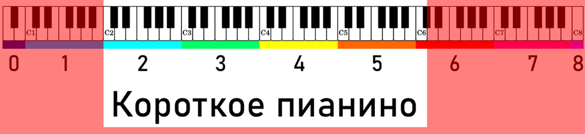
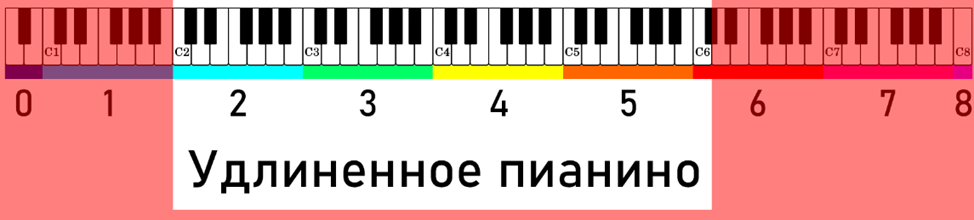
Тут стоит отметить, что данное руководство я написал ещё до выхода обновления 2.4. Поэтому недавно была добавлена бас-гитара.
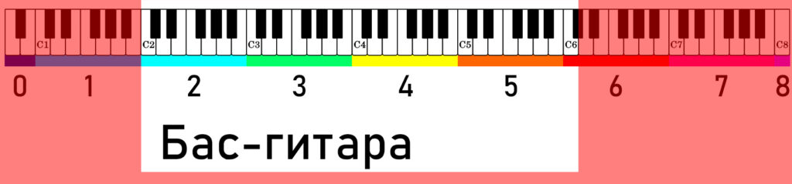
До обновления 2.4 первая октава колокольчика была сломана и фальшивила. После 2.4 его починили.
Этот инструмент вообще не рекомендую использовать. В случае выхода ноты за предел октав, они будут транскрибированы или перенесены на октаву ниже или выше, чтобы вернуться в диапазон игры инструмента.
К примеру, до 3 октавы у фортепиано ещё доступно. Но если взять до 4, то она будет переведена на 3.
Стоит отметить, что я немного дезинформирую. Существуют реальные названия октав на картинке ниже для пианино
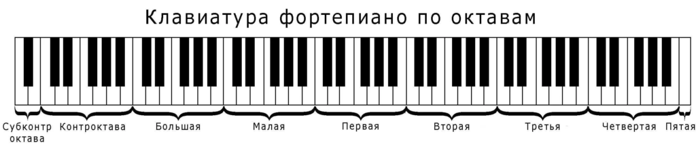
А ниже просто обозначает порядковый номер октавы, начиная с 0
В Survivalcraft у всех инструментов первая доступная октава это 0. Просто для пианино это большая октава, а для вокального ду — малая.
В общем, подробнее про это будет в руководстве по электричеству Survivalcraft. Тоже самое и с другими инструментами, только там доступных октав ещё меньше.
Как можно заметить программа сама переводит, едва ты нажимаешь какие-либо кнопки. Это сделано для удобства. Перевод программы актуален на версию Survivalcraft 2.3
Теперь главный вопрос, какими возможностями и ограничениями обладает программа?
Стоит отметить, что несмотря на то, что это все выглядит очень впечатлительно, по факту музыка в Survivalcraft остаётся огрызком и многое здесь нельзя реализовать. Как я уже говорил нельзя брать низкие и высокие ноты, приходится их поднимать или опускать. Эти красные ноты не получится воспроизвести в игре на любом инструменте. Поэтому программа просто их поднимет на октаву вверх самостоятельно.
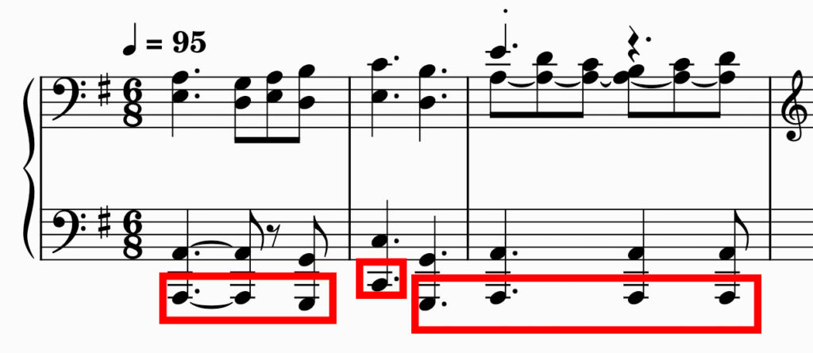
Крайне быстрые длительности при высоком темпе. К примеру, 1/16 при скорости 172 четверти в минуту не успеют сыграться.
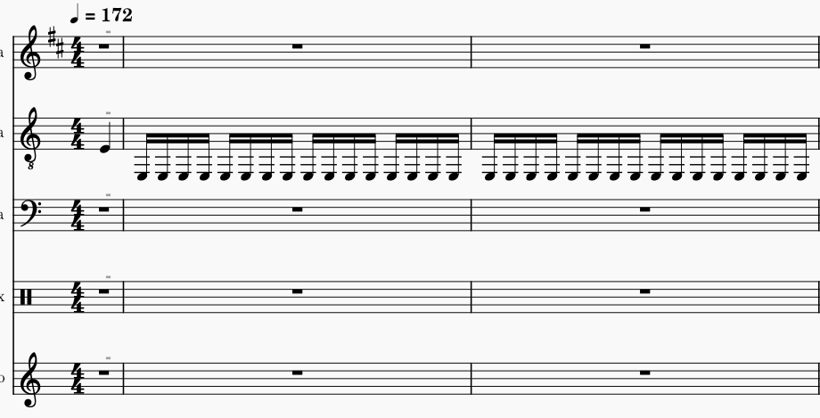
Программа это переведёт, только в игре будет невозможно сыграть так быстро, поскольку генератор звука постоянно будет съедать ноты.
Программа может перевести любую длительность, но проблема в том, что в игре нельзя будет это воспроизвести. То бишь проблема не в моей проге, а в Survivalcraft.
Тоже самое касается мультиолей. Это такие длительности нот, которые играются в сумме по времени на единицу меньше, чем есть. Из-за этого получаются дробные значения и все это приводит к увеличению кодировки символов.
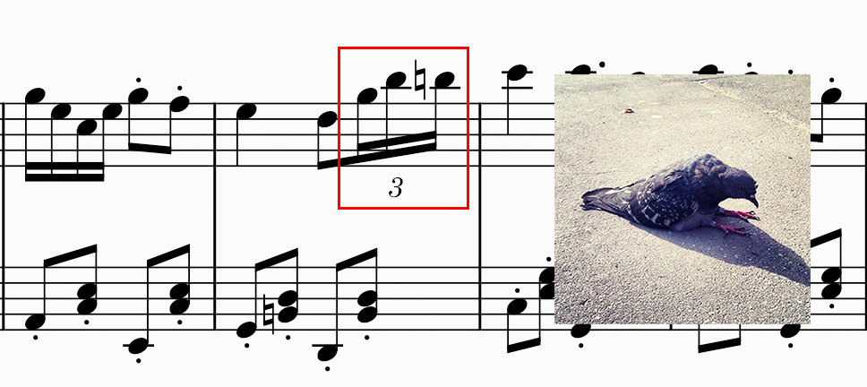
В теории триоль можно реализовать, у меня даже получилось один раз, но там есть неточности. Поэтому такие элементы пока нужно удалять из произведения.
Далее аккорды. Аккорд — это ноты, которые играются одновременно.
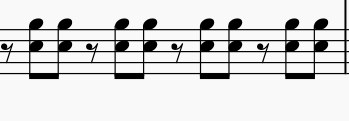
Прикол формата MusicXML в том, что ноты в аккордах идут последовательно сверху вниз или наоборот, я не помню. Поэтому, если ты попытаешься перевести аккорд, то ноты в нем будут переведены друг за другом, что сделает перевод неправильным.
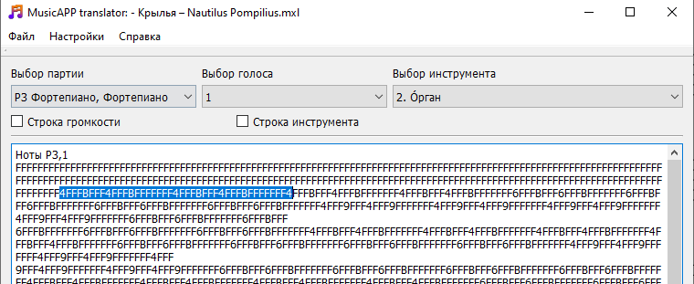
4 B 4 B 4 B. Получится, что ноты играются друг за другом, что совсем не так. Напоминаю, что в игре можно воспроизвести только одну ноту в один момент времени на одном генераторе звука и, таким образом, необходимо разбить аккорд на ноты. Примерно так.
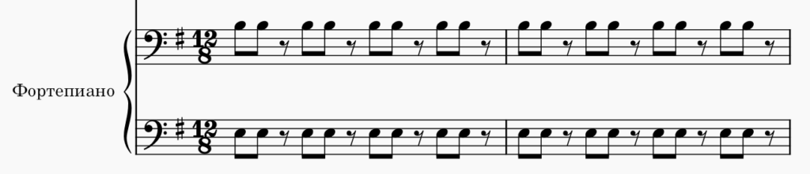
Каждая нота в аккорде — это отдельный перевод.
Поэтому отсюда следует, что нужно передавать программе партию с одиночными нотами. Как этого добиться? Есть 2 пути.
- Плагин в musescore stack, который может подрезать ноты в аккорде, но проблема в том, что он работает, когда все аккорды одинакового размера. Поэтому ты создаешь новую партию в musescore. Копируешь часть с одинаковыми аккордами. На одной нажимаешь prune 2, на другой prune 1. Готово. Скачать
- И второй способ, скорей всего, ты будешь работать с ним — это твои ручки. Также копируешь партию в чистую, а дальше удаляешь ноты, чтобы на каждой строке была своя нота из аккорда. Как-то автоматизировать и ускорить этот процесс можно, написав плагин на qml. Но пока приходится так. В будущем, может быть, я что-то придумаю…
Проблема ручного труда в том, что можно легко совершить ошибку. Проверять нужно внимательно, слушая перевод в игре. Если несколько нот перескачут, то где-то ты забыл удалить аккорд из 2 нот (у меня так было пару раз).
Я также могу потрудиться и разработать алгоритм в самой программе, который будет сам разбивать аккорды, записывать ноты в матрицу и переводить. Но это будет позже. Вначале нужно сделать тёмную тему, затем добавить перевод на зинглиш, 2 млрд раз переделать интерфейс и только потом улучшать функциональность. Так ведь у нас любят обычно делать?)
Также могут возникнуть проблемы с поддержкой каких-то специфических инструментов. К примеру, табы гитары работают, но я не знаю работают ли всё остальное.
Почти забыл упомянуть, что бывают такие приколы с некоторыми инструментами, когда нота вроде та, а на самом деле другая.
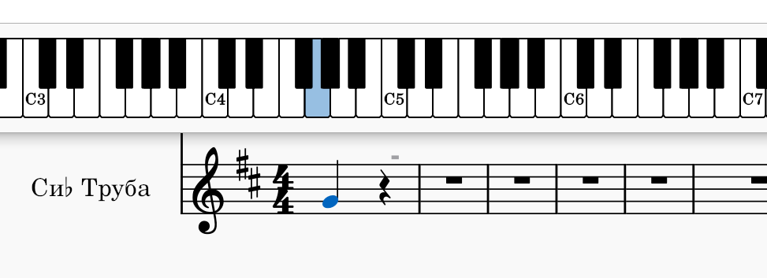
Кажется, что это соль…
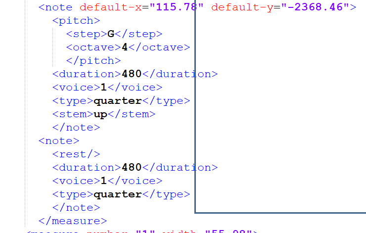
И в теге step тоже G — соль. Но …
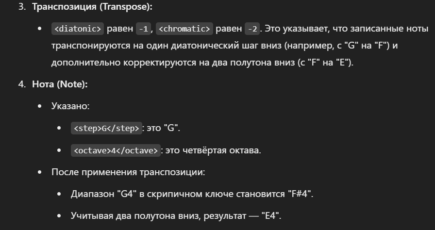
Бот, конечно, ересь под конец написал, нота не E а F, если я не ошибаюсь. Из-за особенности этой трубы звук сдвигается на два полутона и получается нота фа. А программа переведёт её как соль. Послушаем.
Для решения этой проблемы нужно всего лишь сменить на любой другой инструмент и о чудо! Нота соль превращается в ноту фа!!!
За программой ни разу не было замечено случаев, когда нота переводилась неправильно (кроме этого случая) или вовсе пропускалась, тоже самое касается и октав.
Предполагаю, что это успех. Но ошибки по-любому где-то есть и когда-нибудь всплывут.
Забыл рассказать, что лигу, которая продлевает действие первой ноты до второй. Программа это сразу обнаруживает и продлевает. То есть можно сколько угодно добавлять лиг и продлевать длительность звучания, но программа переведёт это как одну ноту.
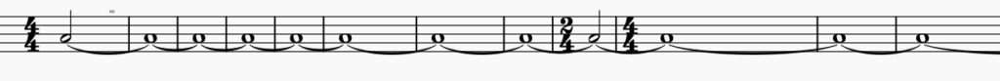
Это всё одна нота играется.
Пример перевода
Пример того, как я переводил. Все композиции я заранее подготовил, где-то убрал триоли, где-то разбил аккорды.
На 7:00 я демонстрирую работу перевод ударных инструментов. Дело в том, что если подать на вход генератора звука 9 и значения от 0 до 9 на вход нот, то можно воспроизводить ударные инструменты. Опять же нужно разбивать аккорды ударных инструментов, если они есть. Позже я добавлю конфигуратор ударных инструментов (уже есть такая кнопка), которая позволит самому выбирать звук ударного инструмента. Текстом пока объяснить сложно, но это на будущее. В игре доступен список из 10 ударных инструментов.
| Тип нот | Название инструмента |
| 0 | Snare |
| 1 | Buss drum |
| 2 | Closed High hat |
| 3 | Pedal High hat |
| 4 | Open High Hat |
| 5 | Low tom |
| 6 | High tom |
| 7 | Crash |
| 8 | Ride |
| 9 | Handclap |
Немного об истории разработки
Когда-то давно, ещё а году 2021 я нашёл программу на одном форуме, которая переводит ноты из midi файлов. Я пыжился, напрягался, но понять как она работает, так и не смог. Спустя год в апреле 2022, когда я начал активно писать руководство по электричеству в Survivalcraft, я опять начал смотреть на программу и о чудо, я смог понять, как она работает, не смотря на её страшный и неприятный java интерфейс.
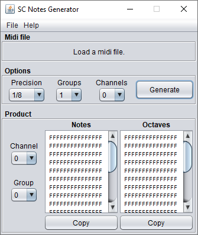
Этому хлопчику стоит похлопать, так как он был первооткрывателем в этой области.
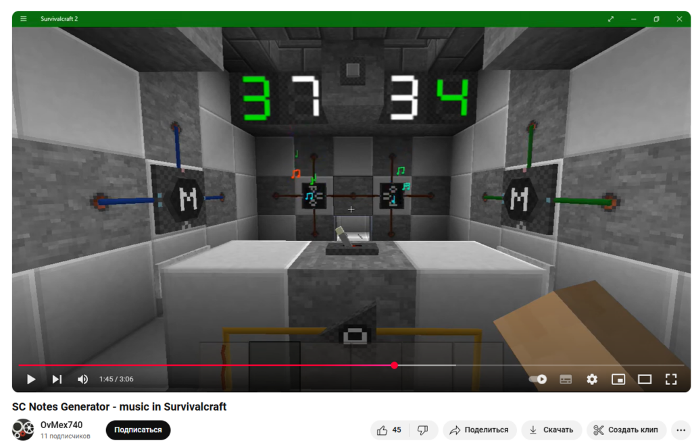
А ему вообще памятник, поскольку mgblitz81 переводил всё вручную.
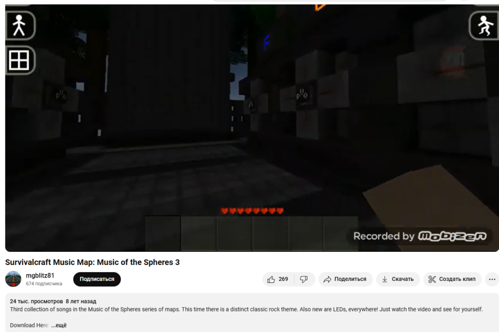
Несмотря на то, что она существенно сокращала время перевода, теребить приходилось так сильно, что после сего действия начинала болеть голова. А все из-за ошибок в переводе. Проблемы заключались в том, что программа всегда съедала последнюю ноту в партии, путала октавы, иногда кидала цифру 9 из-за чего все начинало пищать и вообще каждый шаг приходилось дотошно проверять ручками и иногда на это уходило несколько часов.
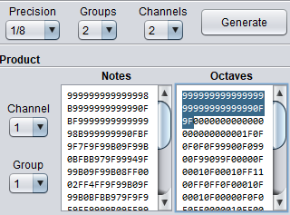
Но, стоит отметить достоинства. Это программа каким-то образом переводила триоли. Как, спросишь? А я не шарю за java, поэтому не смогу сказать.
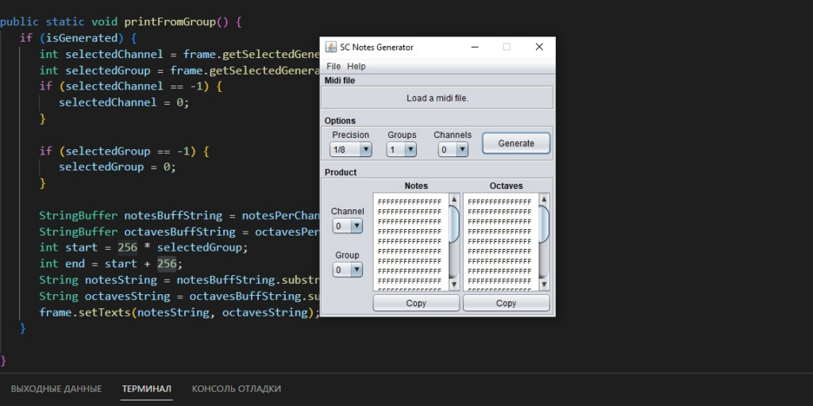
Затем в какой-то момент я так устал от многочасовых проверок за прогой, в ходе которых часто случались многочасовые затупы, как с моей, так и со стороны программы, из-за которых время перевода значительно увеличивалось. Я принял стратегическое решение делать свой продукт. На православном В++, на священном языке русов и позже на платформе qt. Я понял, что midi я не потяну, поскольку ну там вообще нет нормальной документации, в отличии от MusicXML. Я захотел сделать удобную человеческую программу, вложив все знания, которых тогда не было, поскольку приходилось разбираться с нуля…
Рассказывать про процесс разработки своей программы можно долго. Это как я подключал библиотеку для чтения xml файла. Вот к примеру, я её скачал, подключил, создал объект, передал ему путь и потом он мне сказал: «Эй, ты, кожанный мешок, кажется, у тебя проблемы.» И дальше тупо сидишь, и отдыхаешь.
Ошибка есть, но перейти к ней нельзя. Но в последствии было выяснено, что ошибка связана с тем, что компилятор не нашёл библиотеку. Если указать полный путь до библиотеки, то всё начало чудно работать.
Также было потрачено чуть больше, чем бесконечно времени на то, как я кириллицу чинил в консоли, как документацию читал, как несколько часов искал ошибку, а ошибки не было, поскольку был упущен один музыкальный прием — сладкая триоль. Тогда я ещё не понимал, что это такое. Ну и многие другие вещи. В общей сложности на разработку ушло больше 2 лет, но это при условии, что я сижу пару дней, а дальше несколько месяцев отдыхаю. Это как майнкрафт, захотел что-то построить, зашёл, построил и забросил.
Первое произведение, которое я практически полностью перевёл этой программкой был Scatman скубиду или как-там он тараторит. Это были 10 музыкальных станов с различными инструментами. На тот момент я ещё не добавил поддержку ударных инструментов. Перевод обычных нот занял минут 10, а с ударными я потратил целый день, так как переводил я все ещё той java программой.
В итоге, победа всё-таки случилась, и я довёл прогу до стабильного состояния. Когда-нибудь я сделаю отдельный подробный видос или стрим, где расскажу, как полностью перевести какое-либо музыкальное произведение. Примерно, как эта справка, только гораздо подробнее. От постройки самого устройства в игре, до перевода, записи в карты памяти и проверки на ошибки.
Да, это по-прежнему не так быстро, поскольку аккорды все равно нужно разбивать ручками, но это быстрее, чем ручное теребление. И я действительно испытал удовольствие, когда за секунду я получил ноты и октавы. У меня была только одна сладкая мысль — мне не нужно опять искать ошибки часами!Проверку нужно делать, но это только для того, чтобы удостовериться, что я не оставил лишнюю ноту, когда редактировал ноты.
Если программа на java переводит midi файлы, то я взял MusicXML, так как он легче для отладки и чтения. В тегах уже лежат названия нот, октав. Есть разбиение на партии и голоса. Нужно было просто прочитать эти значения.
А midi представляет из себя двоичный файл из нулей и единиц. Тебе нужно отслеживать специальные заголовки событий, расшифровывать, отслеживать и вычислять время. Это очень сильная головная боль. И в java была какая-то то ли библиотека, то ли ещё что-то, что могло уже удобно записывать в массив и почти не насилуя преобразовывать в нужный формат.
У меня же в MusicXML все очень удобно, однако громадных алгоритмов избежать не удалось. И чем больше новых фишек, тем больше кода.
Последний затуп осенью 2024 года была связан с апатией и потерей интересов из-за чего ничего не хотелось делать. А ещё я всё никак не мог подключить библиотеку для извлечениясжатых mxl файлов.
Ну и немного моей головной боли.
Сколько я просидел времени, не видев эту триоль. Это моё первое знакомство с ней.
Тут я ещё не понимал до конца логику работы классов Qt.
А это попытка что-то там скомпилировать…
А это сущий кошмар с openssl.
Библиотеки использованные в разработке
TinyXML2 для чтения xml файлов https://github.com/leethomason/tinyxml2
MINIZ для открытия сжатых xml файлов https://github.com/richgel999/miniz
Обратная связь
Планируется расширять, обновлять и добавлять новые фишки.
Если найдены какие-либо жуки в приложении, ошибки пиши сюда с прикреплением файла musixml и скрина ошибки https://github.com/Pigeon-Ignaty/survivalcraft-notes-translator/issues
Исходный код https://github.com/Pigeon-Ignaty/survivalcraft-notes-translator
Планируется перенести проект на cMake, добавить поддержку английского языка, темы и многопоточность.